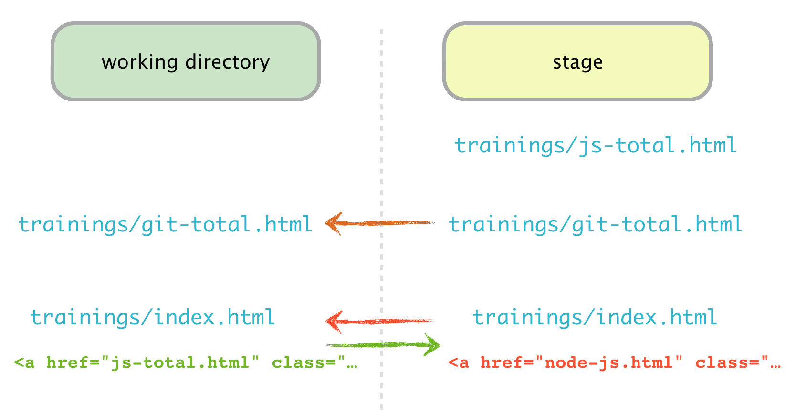
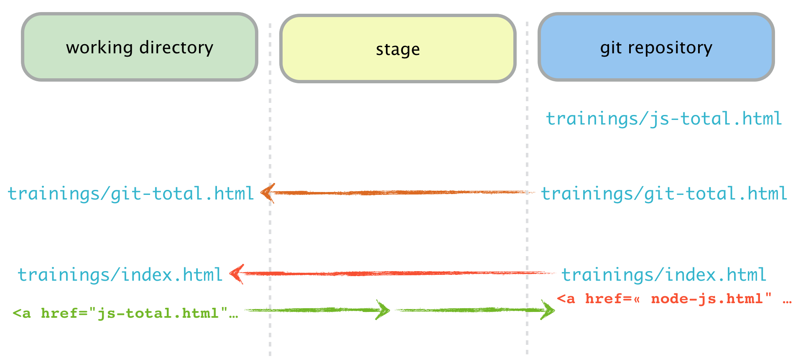

J’ai oublié une partie dans mon stage et j’ai mis quelque chose en trop.
Sur la branche feat/training-detail nous avons effectué un ajout partiel mais avons introduit des erreurs : dans trainings/index.html, nous voulions lier le fichier nouvellement créé trainings/js-total.html.
Or nous avons lié le fichier trainings/node-js.html non finalisé et inclus une modification non voulue qui concerne le fichier trainings/git-total.html.
Nous voulons donc défaire le stage incriminé.
Exercice 1 (2/2)
J’ai foiré mon git add -p …

Exercice 2 (1/2)
J’ai foiré mon git add -p … et commité
Même contexte que l’exercice 1, sauf que nous avons commité en plus…
On veut donc défaire non plus les modifications du stage mais du dernier commit (position précédente du HEAD), sans écraser nos modifications locales, puis ré-écrire ce dernier commit en conservant son message.
Exercice 2 (2/2)
J’ai foiré mon git add -p … et commité (2/2)

Exercice 3
J’ai tout commité au lieu de juste mon stage
On avait préparé notre commit (stage prêt) sauf qu’au moment du commit nous allons avoir ce réflexe malheureux d’ajouter l’option -a.
En entrant dans le répertoire, regardez l’état du working directory et du stage, puis faites :
git commit -am 'Add logo to header in git-total.html'
On veut retirer du commit seulement les fichiers/modifications qui n’avaient pas à y être :
trainings/js-total.html trainings/index.html
Autrement dit, on veut remettre ces fichiers dans leur état précédent, puis rejouer notre commit.
Exercice 4
J’ai foiré mon message de commit
Dans notre dépôt nous avons créé la page pour la formation node-js et préparé le lien dans notre fichier trainings/index.html.
Vous allez donc créer un commit à cet effet (le stage est déjà prêt) :
git commit -m 'Create node-js detail'
En vérifiant le log (git lg -5) on s’aperçoit malheureusement que nous avions utilisé un autre format d’intitulé pour les pages JS Total et Git Total.
Pour être cohérents et avoir un historique nickel, nous aimerions avoir plutôt le message de commit « Add node-js page ».
Exercice 5
J’ai mis 2 commits à corriger mon bug
Dans notre dépôt nous avons effectué plusieurs modifications concernant l’ajout de la page node-js.html : la création du contenu puis l’ajout du logo.
Considérons que l’ajout du logo n’a pas lieu d’être dans un commit dédié et qu’il convient de le mettre dans notre commit de création de page.
Il nous faut défaire les modifications du dernier commit et mettre à jour le commit précédent pour qu’il les intègre.
Exercice 6 (1/2)
Nous avions effectué 2 commits sur la branche feat/training-detail pour ajouter la gestion d’un sommaire en latéral sur les pages des formations.
Malheureusement nous avons effectué une mauvaise manipulation et sommes revenus 2 commits en arrière :
Exercice 6 (2/2)
Nous souhaitons donc récupérer ces commits pour ne pas perdre notre travail.
Pour cela on va pouvoir se servir de la journalisation de nos actions dans Git pour défaire la dernière que nous avons effectué.